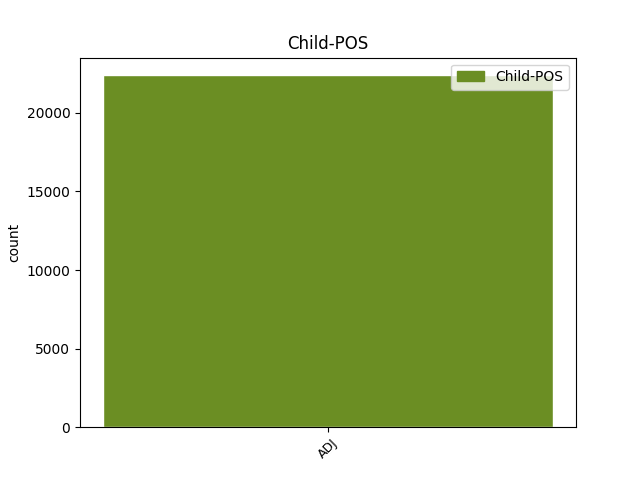

Distribution of features within this leaf

Agreement Rules sorted by frequency.
When the head token is NOUN and the dependent token is ADJ.
1 Töötud _ _ _ _ 0 _ _ _
2 riiklikku riiklik ADJ A Case=Add|Degree=Pos|Number=Sing 3 mod _ _
3 tööhõivetalitusse töö_hõive_talitus NOUN S Case=Add|Number=Sing 0 _ _ _
4 pöördumise _ _ _ _ 0 _ _ _
5 ja _ _ _ _ 0 _ _ _
6 mittepöördumise _ _ _ _ 0 _ _ _
7 järgi _ _ _ _ 0 _ _ _
8 , _ _ _ _ 0 _ _ _
9 % _ _ _ _ 0 _ _ _
10 , _ _ _ _ 0 _ _ _
11 1995-2000 _ _ _ _ 0 _ _ _
When the head token is AUX and the dependent token is ADJ.
1 Ka _ _ _ _ 0 _ _ _
2 tootlikkus _ _ _ _ 0 _ _ _
3 oli olema AUX V Mood=Ind|Number=Sing|Person=3|Tense=Past|VerbForm=Fin|Voice=Act 0 _ _ _
4 2000. _ _ _ _ 0 _ _ _
5 a. _ _ _ _ 0 _ _ _
6 kõrgem kõrgem ADJ A Case=Nom|Degree=Cmp|Number=Sing 3 comp:pred _ _
7 kui _ _ _ _ 0 _ _ _
8 1999. _ _ _ _ 0 _ _ _
9 a. _ _ _ _ 0 _ _ _
10 ja _ _ _ _ 0 _ _ _
11 2000. _ _ _ _ 0 _ _ _
12 a. _ _ _ _ 0 _ _ _
13 , _ _ _ _ 0 _ _ _
14 st _ _ _ _ 0 _ _ _
15 masinatesse _ _ _ _ 0 _ _ _
16 ( _ _ _ _ 0 _ _ _
17 tehnoloogiasse _ _ _ _ 0 _ _ _
18 ) _ _ _ _ 0 _ _ _
19 tehtud _ _ _ _ 0 _ _ _
20 investeeringud _ _ _ _ 0 _ _ _
21 väljendusid _ _ _ _ 0 _ _ _
22 2000. _ _ _ _ 0 _ _ _
23 a. _ _ _ _ 0 _ _ _
24 kõrges _ _ _ _ 0 _ _ _
25 tootlikkuses _ _ _ _ 0 _ _ _
26 , _ _ _ _ 0 _ _ _
27 tekitamata _ _ _ _ 0 _ _ _
28 aga _ _ _ _ 0 _ _ _
29 täiendavat _ _ _ _ 0 _ _ _
30 tööhõivet _ _ _ _ 0 _ _ _
31 , _ _ _ _ 0 _ _ _
32 kuna _ _ _ _ 0 _ _ _
33 üldise _ _ _ _ 0 _ _ _
34 kõrgema _ _ _ _ 0 _ _ _
35 tehnoloogia _ _ _ _ 0 _ _ _
36 taseme _ _ _ _ 0 _ _ _
37 juures _ _ _ _ 0 _ _ _
38 hakati _ _ _ _ 0 _ _ _
39 eeldatavalt _ _ _ _ 0 _ _ _
40 enam _ _ _ _ 0 _ _ _
41 tootmist _ _ _ _ 0 _ _ _
42 ratsionaliseerima _ _ _ _ 0 _ _ _
43 . _ _ _ _ 0 _ _ _
When the head token is ADJ and the dependent token is ADJ.
1 15-69aastased 15-69_aastane ADJ A Case=Nom|Degree=Pos|Number=Plur 2 mod _ _
2 mitteaktiivsed mitte_aktiivne ADJ A Case=Nom|Degree=Pos|Number=Plur 0 _ _ _
3 soo _ _ _ _ 0 _ _ _
4 ja _ _ _ _ 0 _ _ _
5 mitteaktiivsuse _ _ _ _ 0 _ _ _
6 põhjuse _ _ _ _ 0 _ _ _
7 järgi _ _ _ _ 0 _ _ _
8 , _ _ _ _ 0 _ _ _
9 ( _ _ _ _ 0 _ _ _
10 aastakeskmine _ _ _ _ 0 _ _ _
11 , _ _ _ _ 0 _ _ _
12 tuhat _ _ _ _ 0 _ _ _
13 ) _ _ _ _ 0 _ _ _
14 1989-2001 _ _ _ _ 0 _ _ _
When the head token is PROPN and the dependent token is ADJ.
1 Kvantitatiivsed _ _ _ _ 0 _ _ _
2 uuringud _ _ _ _ 0 _ _ _
3 Nickelli Nickell PROPN S Case=Gen|Number=Sing 0 _ _ _
4 ja _ _ _ _ 0 _ _ _
5 van van ADJ S Case=Nom|Number=Sing 3 conj _ _
6 Oursi _ _ _ _ 0 _ _ _
7 poolt _ _ _ _ 0 _ _ _
8 toovad _ _ _ _ 0 _ _ _
9 välja _ _ _ _ 0 _ _ _
10 , _ _ _ _ 0 _ _ _
11 et _ _ _ _ 0 _ _ _
12 palgakasvu _ _ _ _ 0 _ _ _
13 mõõdukamaks _ _ _ _ 0 _ _ _
14 tegemine _ _ _ _ 0 _ _ _
15 oli _ _ _ _ 0 _ _ _
16 peamine _ _ _ _ 0 _ _ _
17 põhjus _ _ _ _ 0 _ _ _
18 tööturu _ _ _ _ 0 _ _ _
19 taastamisel _ _ _ _ 0 _ _ _
20 . _ _ _ _ 0 _ _ _
When the head token is NUM and the dependent token is ADJ.
1 Viimase viimane ADJ A Case=Gen|Degree=Pos|Number=Sing 2 mod _ _
2 12 12 NUM N Case=Gen|Number=Sing|NumForm=Digit|NumType=Card 0 _ _ _
3 kuu _ _ _ _ 0 _ _ _
4 jooksul _ _ _ _ 0 _ _ _
5 töö _ _ _ _ 0 _ _ _
6 saanud _ _ _ _ 0 _ _ _
7 hõivatud _ _ _ _ 0 _ _ _
8 töösaamisviisi _ _ _ _ 0 _ _ _
9 järgi _ _ _ _ 0 _ _ _
10 , _ _ _ _ 0 _ _ _
11 1989-2001 _ _ _ _ 0 _ _ _
When the head token is PRON and the dependent token is ADJ.
1 Riigisiseselt _ _ _ _ 0 _ _ _
2 võib _ _ _ _ 0 _ _ _
3 ühtedele _ _ _ _ 0 _ _ _
4 majandusagentidele _ _ _ _ 0 _ _ _
5 laekuv _ _ _ _ 0 _ _ _
6 kapital _ _ _ _ 0 _ _ _
7 tekitada _ _ _ _ 0 _ _ _
8 hoopis _ _ _ _ 0 _ _ _
9 lisanduvaid _ _ _ _ 0 _ _ _
10 suhtlemiskulusid _ _ _ _ 0 _ _ _
11 nende tema PRON P Case=Gen|Number=Plur|Person=3|PronType=Prs 0 _ _ _
12 ja _ _ _ _ 0 _ _ _
13 kapitalist _ _ _ _ 0 _ _ _
14 ilmajäänute ilma_jäänud ADJ A Case=Gen|Degree=Pos|Number=Plur|Tense=Past|VerbForm=Part|Voice=Act 11 conj _ _
15 ( _ _ _ _ 0 _ _ _
16 vähem _ _ _ _ 0 _ _ _
17 saanute _ _ _ _ 0 _ _ _
18 ) _ _ _ _ 0 _ _ _
19 vahel _ _ _ _ 0 _ _ _
20 . _ _ _ _ 0 _ _ _
When the head token is DET and the dependent token is ADJ.
1 Päris _ _ _ _ 0 _ _ _
2 viimastel _ _ _ _ 0 _ _ _
3 aastatel _ _ _ _ 0 _ _ _
4 on _ _ _ _ 0 _ _ _
5 leitud _ _ _ _ 0 _ _ _
6 tõendeid _ _ _ _ 0 _ _ _
7 planeetide _ _ _ _ 0 _ _ _
8 olemasolust _ _ _ _ 0 _ _ _
9 õige õige ADJ A Case=Gen|Degree=Pos|Number=Sing 10 mod _ _
10 mitme mitu DET P Case=Gen|Number=Sing|PronType=Ind 0 _ _ _
11 tähe _ _ _ _ 0 _ _ _
12 juures _ _ _ _ 0 _ _ _
13 ja _ _ _ _ 0 _ _ _
14 selliste _ _ _ _ 0 _ _ _
15 tähtede _ _ _ _ 0 _ _ _
16 arv _ _ _ _ 0 _ _ _
17 on _ _ _ _ 0 _ _ _
18 kiiresti _ _ _ _ 0 _ _ _
19 kasvanud _ _ _ _ 0 _ _ _
20 . _ _ _ _ 0 _ _ _
When the head token is X and the dependent token is ADJ.
1 Samas _ _ _ _ 0 _ _ _
2 on _ _ _ _ 0 _ _ _
3 püsiv püsiv ADJ A Case=Nom|Degree=Pos|Number=Sing|Tense=Pres|VerbForm=Part|Voice=Act 4 mod _ _
4 pruritus pruritus X S Case=Nom|Number=Sing 0 _ _ _
5 ebameeldiv _ _ _ _ 0 _ _ _
6 aisting _ _ _ _ 0 _ _ _
7 , _ _ _ _ 0 _ _ _
8 mis _ _ _ _ 0 _ _ _
9 võib _ _ _ _ 0 _ _ _
10 kutsuda _ _ _ _ 0 _ _ _
11 esile _ _ _ _ 0 _ _ _
12 füüsilise _ _ _ _ 0 _ _ _
13 ja _ _ _ _ 0 _ _ _
14 vaimse _ _ _ _ 0 _ _ _
15 kurnatusseisundi _ _ _ _ 0 _ _ _
16 ( _ _ _ _ 0 _ _ _
17 1 _ _ _ _ 0 _ _ _
18 , _ _ _ _ 0 _ _ _
19 2 _ _ _ _ 0 _ _ _
20 ) _ _ _ _ 0 _ _ _
21 . _ _ _ _ 0 _ _ _
Disagree Examples:
1 See _ _ _ _ 0 _ _ _
2 võimaldas _ _ _ _ 0 _ _ _
3 neil _ _ _ _ 0 _ _ _
4 klientidel _ _ _ _ 0 _ _ _
5 tavalisest tavaline ADJ A Case=Ela|Degree=Pos|Number=Sing 7 udep _ _
6 tunduvalt _ _ _ _ 0 _ _ _
7 suuremaid suurem ADJ A Case=Par|Degree=Cmp|Number=Plur 0 _ _ _
8 intresse _ _ _ _ 0 _ _ _
9 saada _ _ _ _ 0 _ _ _
10 . _ _ _ _ 0 _ _ _
1 Külmkapid _ _ _ _ 0 _ _ _
2 said _ _ _ _ 0 _ _ _
3 ka _ _ _ _ 0 _ _ _
4 kõik _ _ _ _ 0 _ _ _
5 teised _ _ _ _ 0 _ _ _
6 Pirita _ _ _ _ 0 _ _ _
7 hotellis _ _ _ _ 0 _ _ _
8 elavad elav ADJ A Case=Nom|Degree=Pos|Number=Plur|Tense=Pres|VerbForm=Part|Voice=Act 9 mod _ _
9 riigikogu riigi_kogu NOUN S Case=Gen|Number=Sing 0 _ _ _
10 liikmed _ _ _ _ 0 _ _ _
11 . _ _ _ _ 0 _ _ _
1 Lii _ _ _ _ 0 _ _ _
2 Undi _ _ _ _ 0 _ _ _
3 selgitused _ _ _ _ 0 _ _ _
4 riietuse _ _ _ _ 0 _ _ _
5 läbi _ _ _ _ 0 _ _ _
6 saadetavatest _ _ _ _ 0 _ _ _
7 alateadvusele _ _ _ _ 0 _ _ _
8 suunatud _ _ _ _ 0 _ _ _
9 signaalidest _ _ _ _ 0 _ _ _
10 on olema AUX V Mood=Ind|Number=Sing|Person=3|Tense=Pres|VerbForm=Fin|Voice=Act 0 _ _ _
11 muidugi _ _ _ _ 0 _ _ _
12 huvitavad huvitav ADJ A Case=Nom|Degree=Pos|Number=Plur|Tense=Pres|VerbForm=Part|Voice=Pass 10 comp:pred _ SpaceAfter=No
13 , _ _ _ _ 0 _ _ _
14 aga _ _ _ _ 0 _ _ _
15 vaevalt _ _ _ _ 0 _ _ _
16 on _ _ _ _ 0 _ _ _
17 nendel _ _ _ _ 0 _ _ _
18 nii _ _ _ _ 0 _ _ _
19 ühene _ _ _ _ 0 _ _ _
20 tõlgendus _ _ _ _ 0 _ _ _
21 . _ _ _ _ 0 _ _ _
1 Kaubamärgi _ _ _ _ 0 _ _ _
2 reklaam _ _ _ _ 0 _ _ _
3 või _ _ _ _ 0 _ _ _
4 välimus _ _ _ _ 0 _ _ _
5 on olema AUX V Mood=Ind|Number=Plur|Person=3|Tense=Pres|VerbForm=Fin|Voice=Act 0 _ _ _
6 toiduainete _ _ _ _ 0 _ _ _
7 puhul _ _ _ _ 0 _ _ _
8 sageli _ _ _ _ 0 _ _ _
9 tähtsam tähtsam ADJ A Case=Nom|Degree=Cmp|Number=Sing 5 comp:pred _ _
10 kui _ _ _ _ 0 _ _ _
11 kvaliteedierinevused _ _ _ _ 0 _ _ _
12 , _ _ _ _ 0 _ _ _
13 mida _ _ _ _ 0 _ _ _
14 tihti _ _ _ _ 0 _ _ _
15 vaid _ _ _ _ 0 _ _ _
16 spetsialistid _ _ _ _ 0 _ _ _
17 saavad _ _ _ _ 0 _ _ _
18 kindlaks _ _ _ _ 0 _ _ _
19 teha _ _ _ _ 0 _ _ _
20 . _ _ _ _ 0 _ _ _
1 Eesti _ _ _ _ 0 _ _ _
2 koorilaulusõbral _ _ _ _ 0 _ _ _
3 avaneb _ _ _ _ 0 _ _ _
4 harukordne _ _ _ _ 0 _ _ _
5 võimalus _ _ _ _ 0 _ _ _
6 traditsiooniliste traditsiooniline ADJ A Case=Gen|Degree=Pos|Number=Plur 7 mod _ _
7 mees- mees NOUN S Case=Nom|Hyph=Yes|Number=Sing 0 _ _ _
8 ja _ _ _ _ 0 _ _ _
9 naiskooride _ _ _ _ 0 _ _ _
10 asemel _ _ _ _ 0 _ _ _
11 näha _ _ _ _ 0 _ _ _
12 ja _ _ _ _ 0 _ _ _
13 kuulda _ _ _ _ 0 _ _ _
14 homo- _ _ _ _ 0 _ _ _
15 ja _ _ _ _ 0 _ _ _
16 lesbikooride _ _ _ _ 0 _ _ _
17 taevalikku _ _ _ _ 0 _ _ _
18 laulu _ _ _ _ 0 _ _ _
19 . _ _ _ _ 0 _ _ _